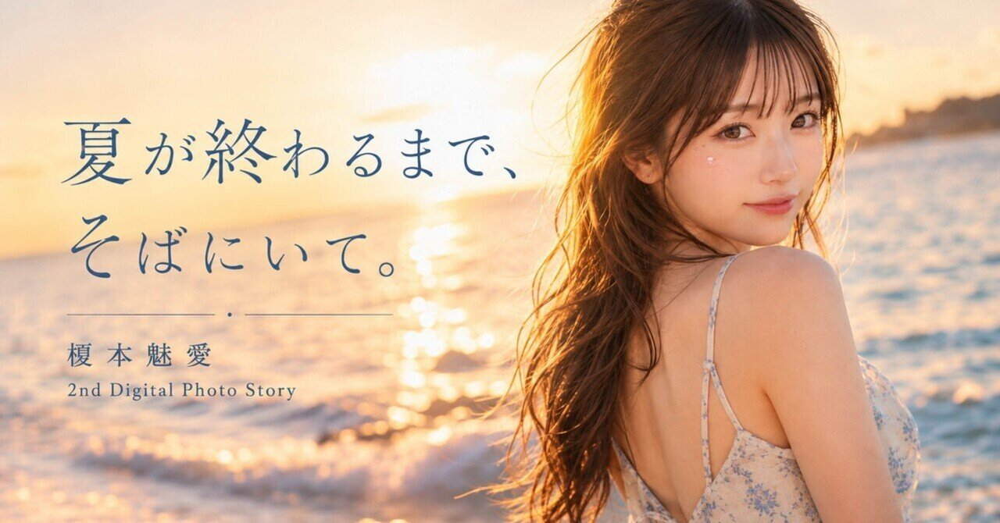
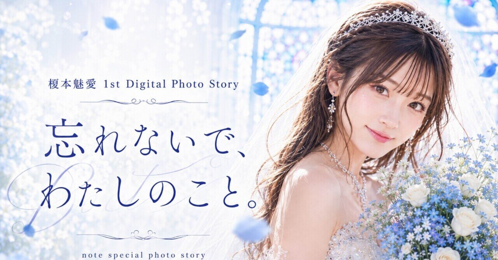

Visual Collection / 妃みちる
妃みちる 1st Digital Photo Book『ありのまま。 — Just As I Am. —』
日常の中にある小さな幸せを描く、妃みちるの1st Digital Photo Book。note公式記事で50カットを収録。
GATE EXPERIENCE
正式な重低音Ver.2が未登録です。扉は無音で開きます。SUZUKA EXPLORER UPDATE
SUZUKA公式AIアーティストの写真集・Visual Collection一覧。
SUZUKA公式AIアーティストの写真集・Visual Collection一覧。
Visual Collection / 妃みちる
日常の中にある小さな幸せを描く、妃みちるの1st Digital Photo Book。note公式記事で50カットを収録。

Visual Collection / 神代煌牙
夜の街に立つ神代煌牙を通して、孤独、傷、弱さ、欲望、誓いと「守る」意志を描く、神代煌牙初の公式デジタル写真集。

Visual Collection / 榎本魅愛
海、ラムネ、浴衣、夏祭り、花火とともに、魅愛と過ごす真夏の一日と終わりゆく夏の寂しさを描く2nd Digital Photo Story。

Visual Collection / 榎本魅愛
青い勿忘草をテーマに、出会い、恋、言えなかった言葉と別れへの想いを30枚の写真と短い言葉で綴る、榎本魅愛の1st Digital Photo Story。